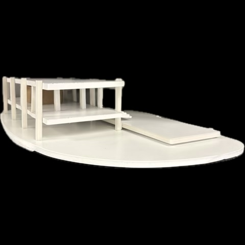
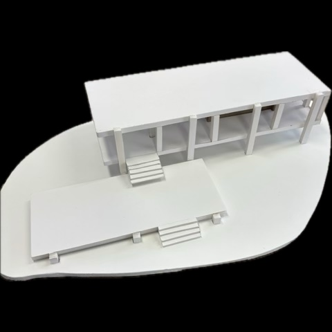
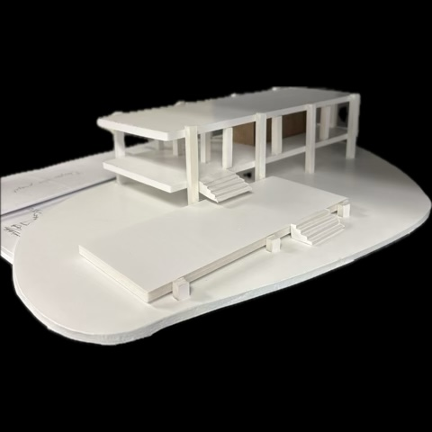
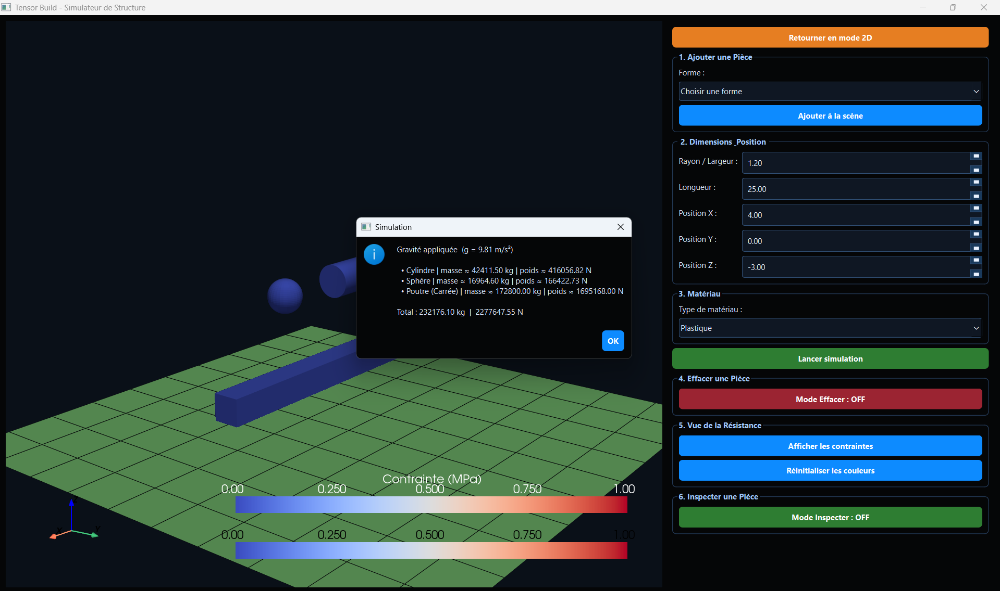
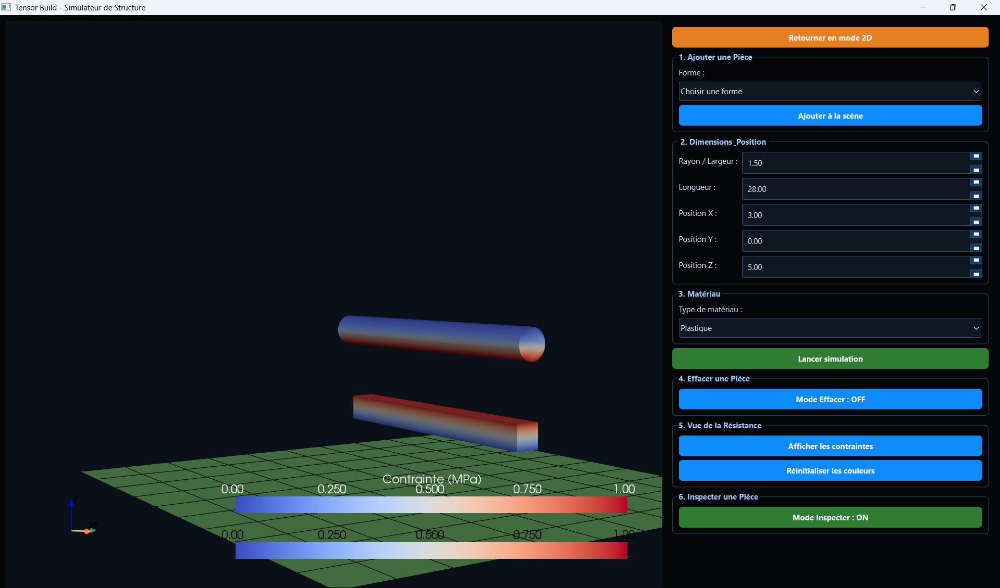
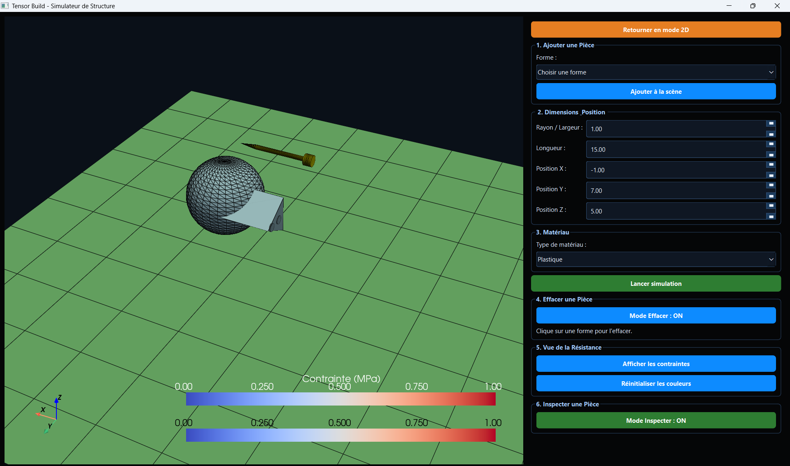

Email: ibrahimenzo11@gmail.com LinkedIn
Langages de Programmation : Python, Java, HTML, CSS
Outils technologiques : Git, Excel, Word, PowerPoint,
Streamlit, LucidChart
Réalisation de plans et maquettes
Implémentation de concepts physiques pour créer un simulateur de résistance des matériaux.






Génie & sciences appliquées
Analyse tensorielle des contraintes
Modélisation des états de contrainte 3D via le tenseur de Cauchy, calcul des contraintes principales et des cercles de Mohr.
Simulation numérique
Implémentation d'algorithmes de résolution pour simuler des champs de contraintes sur des géométries 2D et 3D.
Critères de défaillance
Application des critères de Von Mises et Tresca pour identifier les zones critiques d'un matériau sous charge.
Programmation & architecture logicielle
Calcul matriciel & algèbre linéaire
Manipulation de matrices de rigidité et résolution de systèmes linéaires de grande taille.
Rendu 3D avec OpenGL
Implémentation d'une caméra 3D et rendu temps réel des champs de contraintes via la bibliothèque graphique OpenGL.
Architecture d'un moteur de simulation
Structuration d'un pipeline modulaire : entrée des conditions aux limites, résolution, post-traitement et visualisation.
Collaboration & gestion de projet
Co-développement à 3
Division du travail entre le moteur physique, l'interface et la validation, avec intégration continue des modules.
Gestion de code collaboratif
Utilisation de Git pour coordonner les contributions, résoudre les conflits et maintenir l'historique du projet.
Validation scientifique
Comparaison des résultats de simulation à des solutions analytiques connues pour vérifier la précision du modèle.